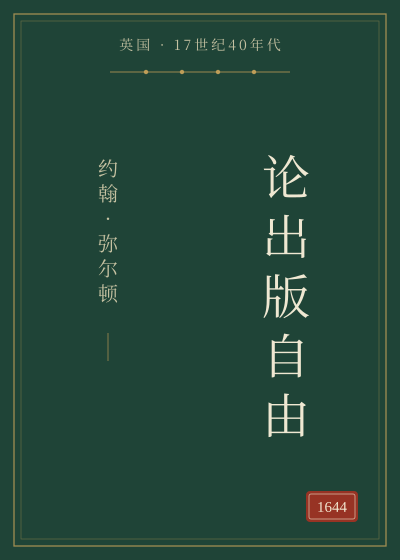
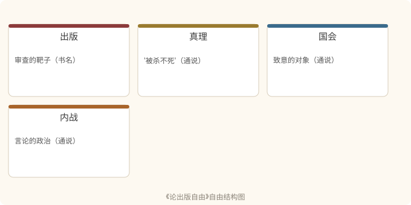

论出版自由
一、基本信息
| 作者 | 弥尔顿 |
|---|---|
| 成书/出版 | 1644年（作者页注记：Britannica——论出版自由 (1644)——言论自由经典） John Milton — Encyclopaedia Britannica（百科全书） |
| 国别/地区 | 英国 |
| 时代 | 古代 · 17世纪40年代 |
| 体裁 | 演讲文 |
| 语言 | 英语 |

《论出版自由》自由结构图（主题·结构图）
二、创作背景
作者页注记：论出版自由 (1644)——'言论自由经典（Britannica）'。
Britannica：弥尔顿——《失乐园》作者（作者页交叉）。
题材（通说待核）：致英国国会——反对预先审查制（licensing）。
三、内容脉络
（通说待核）'真理的种子'：审查的荒谬。
（通说待核）'阿雷奥帕古'：雅典法庭的隐喻。
四、主要人物表
| 人物 | 身份 | 说明 |
|---|---|---|
| （演讲文无人物） | —— | 政论文 |
五、主题与艺术特点
- 出版自由的经典论证（B注记）。
- '真理与审查'（通说待核）。
- 内战时期的言论政治（通说待核）。
六、影响与评论
- Britannica：'言论自由经典'（作者页注记）。
John Milton — Encyclopaedia Britannica（百科全书） - Britannica：《失乐园》为代表作（作者页交叉）。
John Milton — Encyclopaedia Britannica（百科全书）
七、阅读建议
难点
- 17世纪英语政论文。
- 英国长期国会语境（通说待核）。
- 《论出版自由》中译本（商务印书馆等——通说待核）。
- 英文原版（公有领域）。
弥尔顿散文首选；与《失乐园》对读。
八、待核实
- 'Areopagitica'标题直译核对。
- 1644年发表细节待核。
- '预先审查'（licensing）制度细节待核。